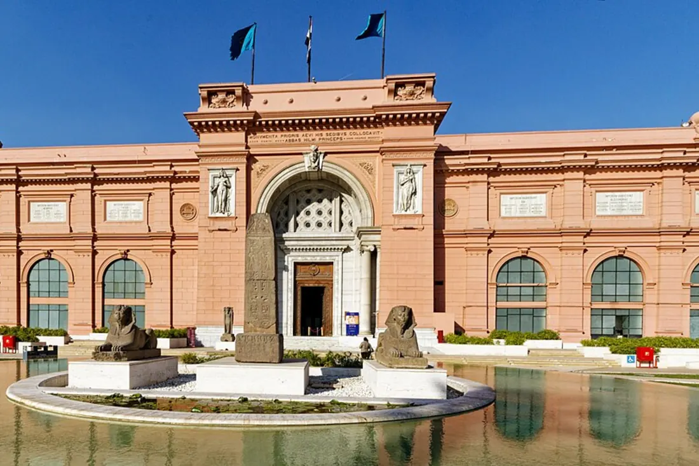
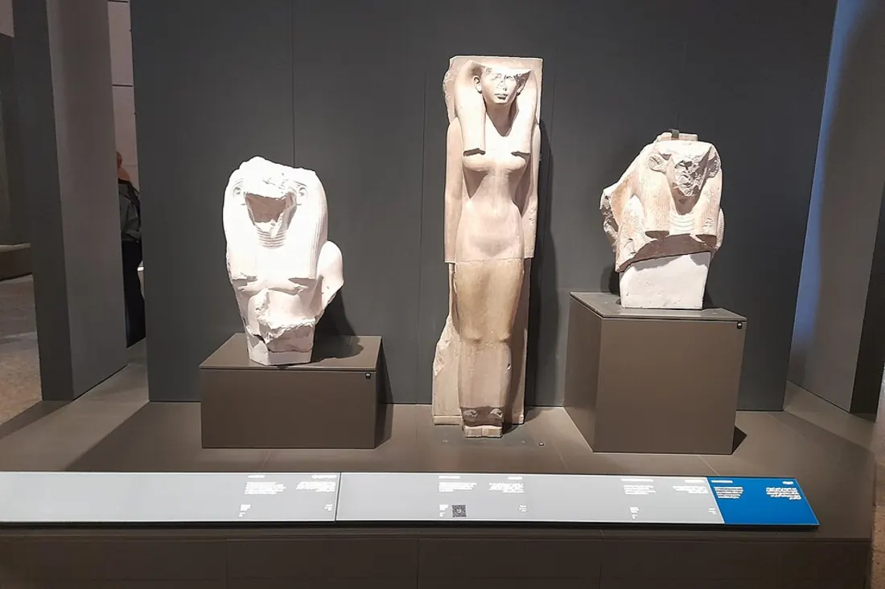
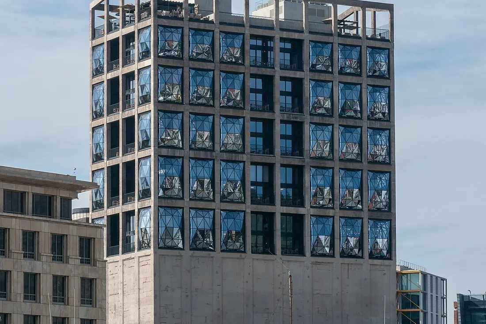
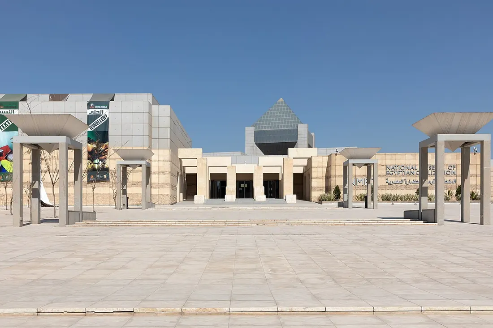
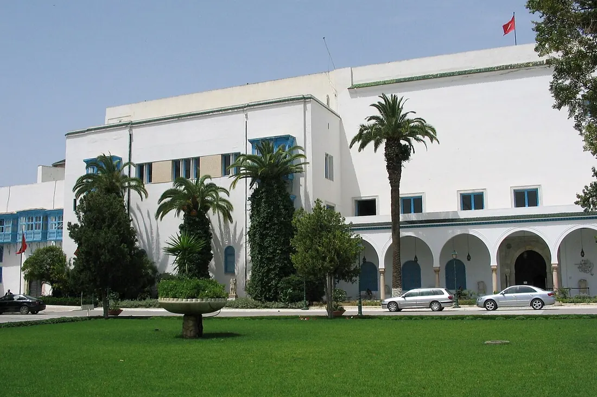
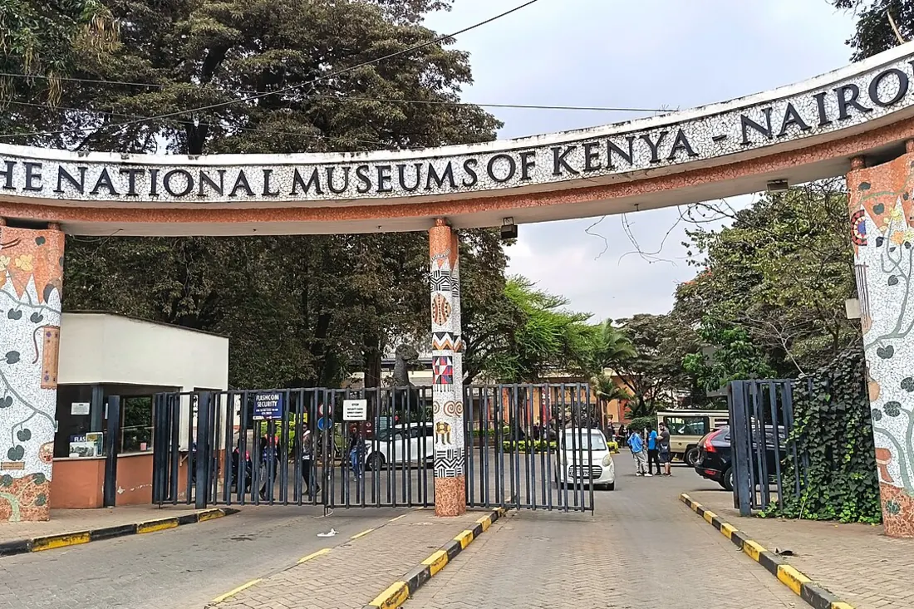

Египетский музей
Каир, Египет
Один из важнейших археологических музеев мира, основанный в 1858 году. Хранит более 120 000 экспонатов Древнего Египта, включая золотую маску Тутанхамона и мумии фараонов.
Сайт музеяДревние цивилизации и культурное наследие чёрного континента

Один из важнейших археологических музеев мира, основанный в 1858 году. Хранит более 120 000 экспонатов Древнего Египта, включая золотую маску Тутанхамона и мумии фараонов.
Сайт музея
Крупнейший в мире музей, посвящённый одной цивилизации. Полностью открылся в ноябре 2025 года у подножия Великих пирамид. Более 100 000 экспонатов, включая полную коллекцию Тутанхамона.
Сайт музеяРасположен в историческом здании в Саду скульптур. Коллекция включает более 1,5 миллиона природных, социальных и культурных экспонатов Южной Африки — от скелетов динозавров до бусин Сан.
Сайт музея
Крупнейший музей современного африканского искусства, открытый в 2017 году. Размещён в перестроенном зернохранилище: резные бетонные атриумы спроектированы студией Хезервик.
Сайт музея
Открыт в 2021 году в районе Фустат в Старом Каире. Первая экспозиция, целиком посвящённая египетской цивилизации от древности до наших дней; здесь расположен королевский зал мумий.
Сайт музея
Один из важнейших музеев Средиземноморья, размещённый в бывшем дворце беев Туниса. Славится крупнейшей в мире коллекцией римских мозаик, а также пуническими и исламскими древностями.
Сайт музея
Флагманский музей Национальных музеев Кении. Коллекции природы, палеонтологии и культуры: знаменитые находки черепов ранних гоминид у озера Туркана и в ущелье Олдувай.
Сайт музея